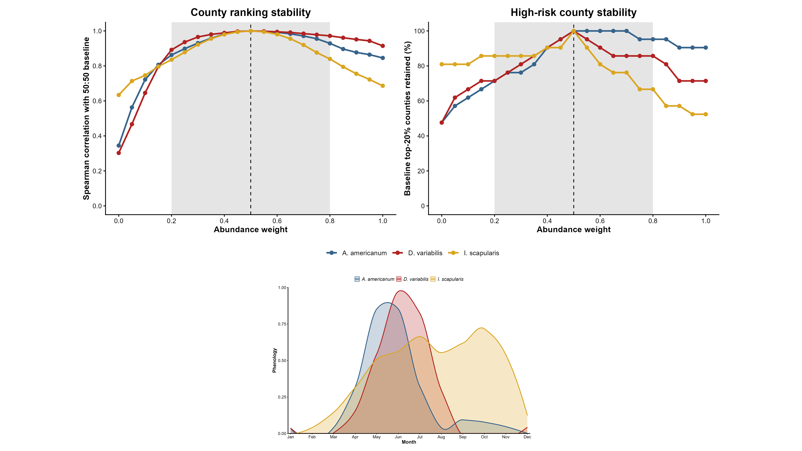
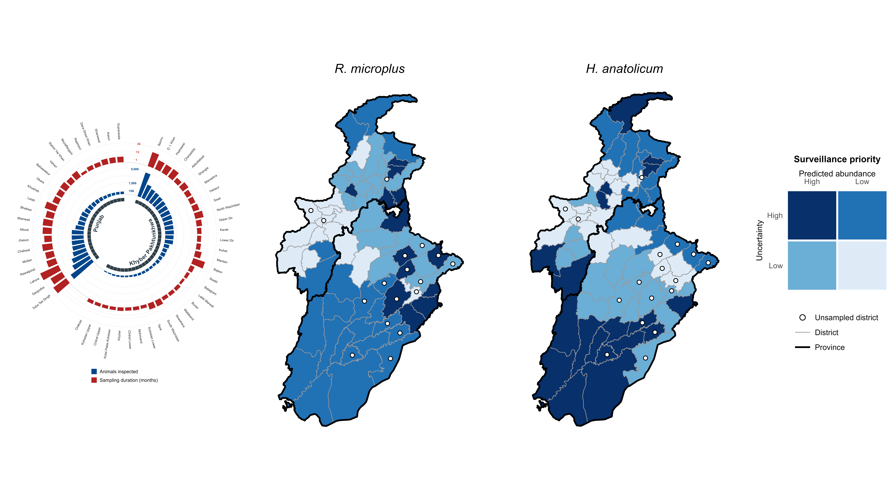
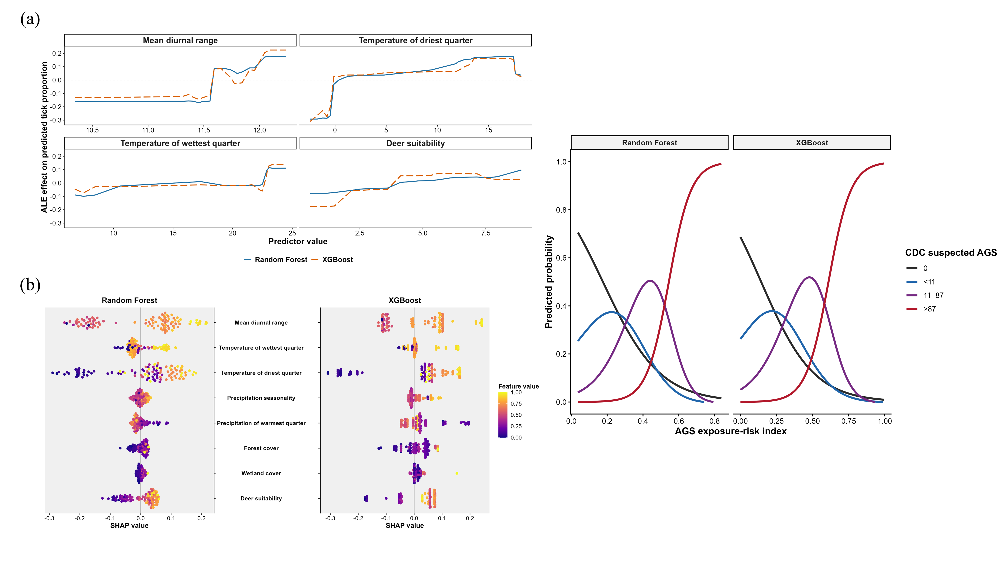

My research focuses on epidemiological modeling to understand and predict disease dynamics, using multidisciplinary approaches.
Research Highlights
County-level tick-borne disease risk in Illinois
We integrated species-specific predicted tick abundance, pathogen prevalence, and seasonal phenology to estimate relative tick-borne disease risk across all 102 Illinois counties, producing an interactive R Shiny application for public and surveillance use.

Predicting livestock tick abundance across data-sparse regions
We developed Bayesian hierarchical spatial models using INLA to generate district-level, uncertainty-aware abundance predictions for Rhipicephalus microplus and Hyalomma anatolicum across Punjab and Khyber Pakhtunkhwa, Pakistan, identifying priority districts for surveillance and control.

Machine-Learning Framework for Alpha-Gal Syndrome Exposure Potential
We used random forest and XGBoost models to predict relative lone star tick (Amblyomma americanum) abundance across 102 Illinois counties, then combined predictions with ehrlichiosis surveillance to construct county-level AGS exposure-risk indices validated against CDC suspected-AGS categories.
